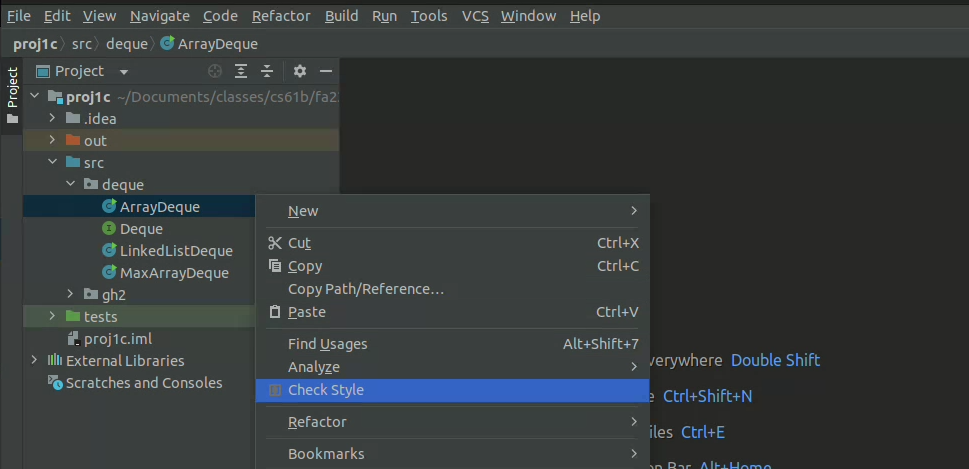

Style Guide
We will not reinstate submission tokens for failing to check style. Plan and use correct style accordingly! You have been warned.
Some notes on this style guide: we have attempted to bring it as close to the default IntelliJ style checker as possible. The style checker also includes some “code quality” checks that IntelliJ does not lint.
It is probably easier to get to know these rules by running the automated style checker. You can run the style checker in IntelliJ by right-clicking on a file in the left sidebar, and selecting “Check Style”. This will generate a list of style errors in the selected file. Be sure to save or recompile your file before running the style checker again.

This style guide may also be incomplete. I’ve attempted to make it as comprehensive as possible, but I may have missed describing some newly added rules.
Whitespace
-
Each file must end with a newline sequence.
-
Files may not contain horizontal tab characters. Use blanks (spaces) only for indentation.
-
Do NOT put whitespace:
- Around the
<and>within a generic type designation (List<Integer>, notList <Integer>, orList< Integer >). - After the prefix operators
!,--,++, unary-, or unary+. - Before the tokens
;or the suffix operators--and++. - After
(or before). - After
.
- Around the
-
DO put whitespace:
- After
;,,, or type casts (e.g.,(String) x, not(String)x). - Around binary operators (e.g.,
*,+) and comparison operators. - Around assignment operators (e.g.,
=,+=). - Around
?and:in the ternary conditional operator (x > 0 ? x : -x). - Around the keywords
assert,catch,do,else,finally,for,if,return,try, andwhile.
- After
-
In general, if you need to use multiple lines for a single statement, break (insert newlines in) lines before an operator, as in
... + 20 * X + Y; -
Do not separate a method name from the
(in a method call with blanks. However, you may separate them with a newline followed by blanks (for indentation) on long lines.
Indentation
-
The basic indentation step is 4 spaces.
-
Indent code by the basic indentation step for each block level (blocks are generally enclosed in
{and}), as inif (x > 0) { r = -x; } else { r = x; } -
Indent
caselabels an indent past their enclosingswitch, as inswitch (op) { case '+': addOpnds(x, y); break; default: ERROR(); } -
Indent continued lines by the basic indentation step.
Braces
-
Use
{}braces around the statements of allif,while,do, and ‘for’ statements. -
Place a
}brace on the same line as a followingelse,finally, orcatch, as inif (x > 0) { y = -x; } else { y = x; } -
Put the
{that opens a block at the end of a line. Generally, it goes at the end of theif,for,while,switch,do, method header, or class header that contains it. If line length forces it to the next line, do not indent it, and put it alone on the line.
Comments
-
Methods should have javadoc comments explaining the behavior, parameters (using @param tags or otherwise), and return type.
-
Methods that return non-void values must describe them in their Javadoc comment either with a “@return” tag or in a phrase in running text that contains the word “return”, “returning”, or “returns”.
-
Each Javadoc comment must start with a properly formed sentence, starting with a capital letter and ending with a period.
Names
-
Names of static final constants must be in all capitals (e.g., RED, DEFAULT_NAME).
-
Names of parameters, local variables, and methods must start with a lower-case letter, or consist of a single, upper-case letter.
-
Names of types (classes), including type parameters, must start with a capital letter.
-
Names of packages must start with a lower-case letter.
-
Names of instance variables and non-final class (static) variables must start with either a lower-case letter or “_”.
Imports
-
Do not import the same class or static member twice.
-
Do not import classes or members that you do not use.
Assorted Java Style Conventions
-
Write array types with the “[]” after the element-type name, not after the declarator. Write “String[] names”, not “String names[]”.
-
Write any modifiers for methods, classes, or fields in the following order:
- public, protected, or private.
- abstract or static.
- final, transient, or volatile.
- synchronized.
- native.
- strictfp.
-
Do not explicitly modify methods, fields, or classes where the modification is redundant:
- Do not label methods in interfaces or annotations as “public” or “abstract”.
- Do not label fields in interfaces or annotations as “static”, “public”, or “final”.
- Do not label methods in final classes as “final”.
- Do not label nested interfaces “static”.
-
Do not use empty blocks (‘{ }’ with only whitespace or comments inside) for control statements. There is one exception: a catch block may consist solely of comments having the form
/* Ignore EXCEPTIONNAME. */ -
Avoid “magic numbers” in code by giving them symbolic names, as in
public static final int MAX_SIZE = 100;Exceptions are the numerals -1, 0, 1, 2, 3, 4, 5, 6, 7, 8, 9, 0.25, 0.5.
-
Do not try to catch the exceptions Exception, RuntimeError, or Error.
-
Write “b” rather than “b == true” and “!b” rather than “b == false”.
-
Replace
if (condition) { return true; } else { return false; }with just
return condition; -
Only static final fields of classes may be public. Other fields must be private or protected. This applies to nested classes as well.
-
Classes that have only static methods and fields must not have a public (or defaulted) constructor.
-
Classes that have only private constructors must be declared “final”.
Avoiding Error-Prone Constructs
-
If a class overrides “equals”, it must also override “hashCode”. This will apply after we learn about
hashCode. -
Local variables and parameters must not hide or shadow field names. The preferred way to handle, e.g., getter/setter methods that simply control a field is to prefix the field name with “_”, as in
public double getWidth() { return _width; } public void setWidth(double width) { _width = width; } -
Do not use nested assignments, such as “if ((x = next()) != null) …”. Although this can be useful in C, it is almost never necessary in Java.
-
Include a “default” case in every “switch” statement.
-
End every arm of a “switch” statement either with a “break” statement or a comment of the form
/* fall through */ -
Do not compare String literals with “==”. Write
if (x.equals("something"))and not
if (x == "something")There are cases where you really want to use “==”, but you are unlikely to encounter them in this class.
Limits
-
No file may be longer than 2000 lines.
-
No line may be longer than 120 characters.
-
No method may be longer than 80 lines.
-
No method may have more than 8 parameters.
-
Every file must contain exactly one outer class (nested classes are OK).